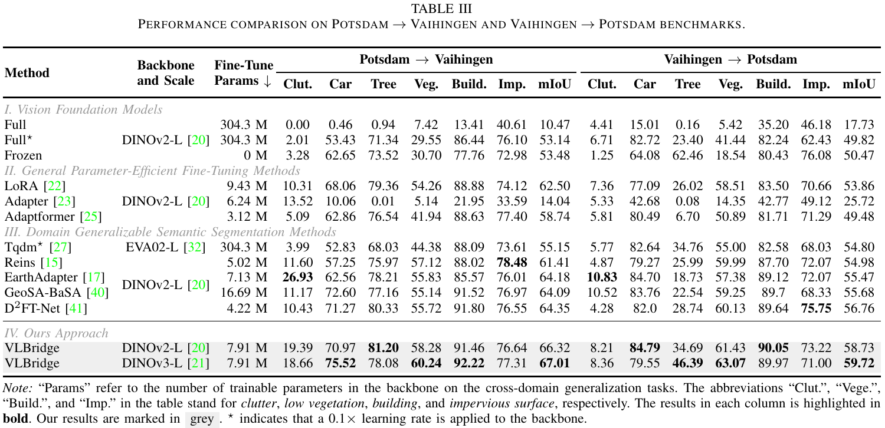
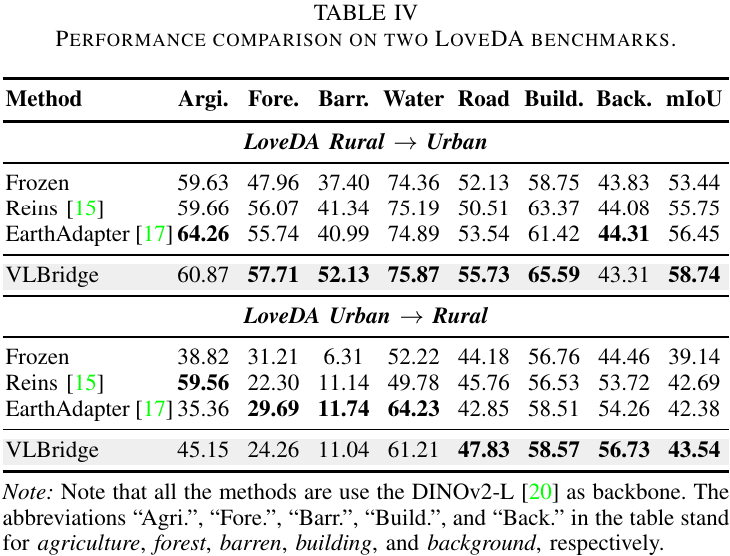
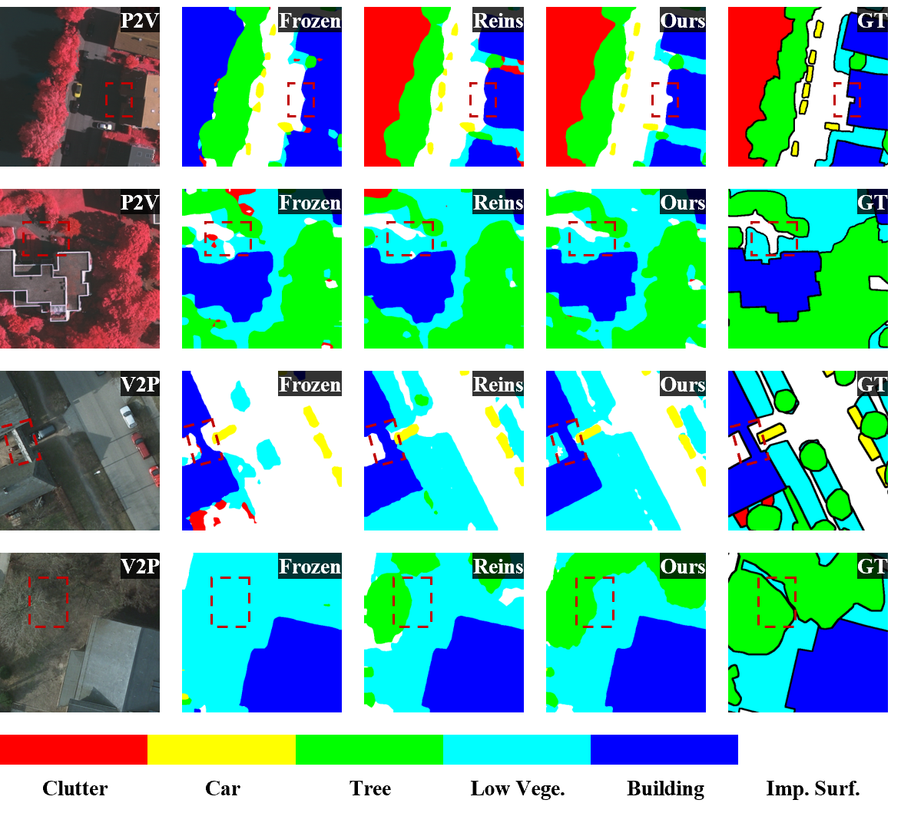
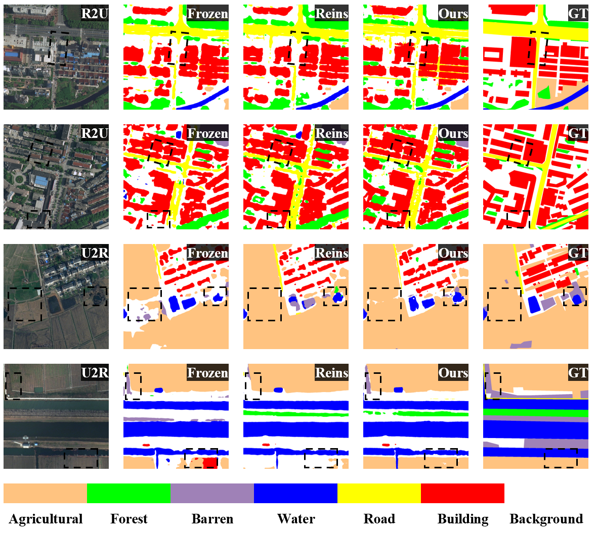
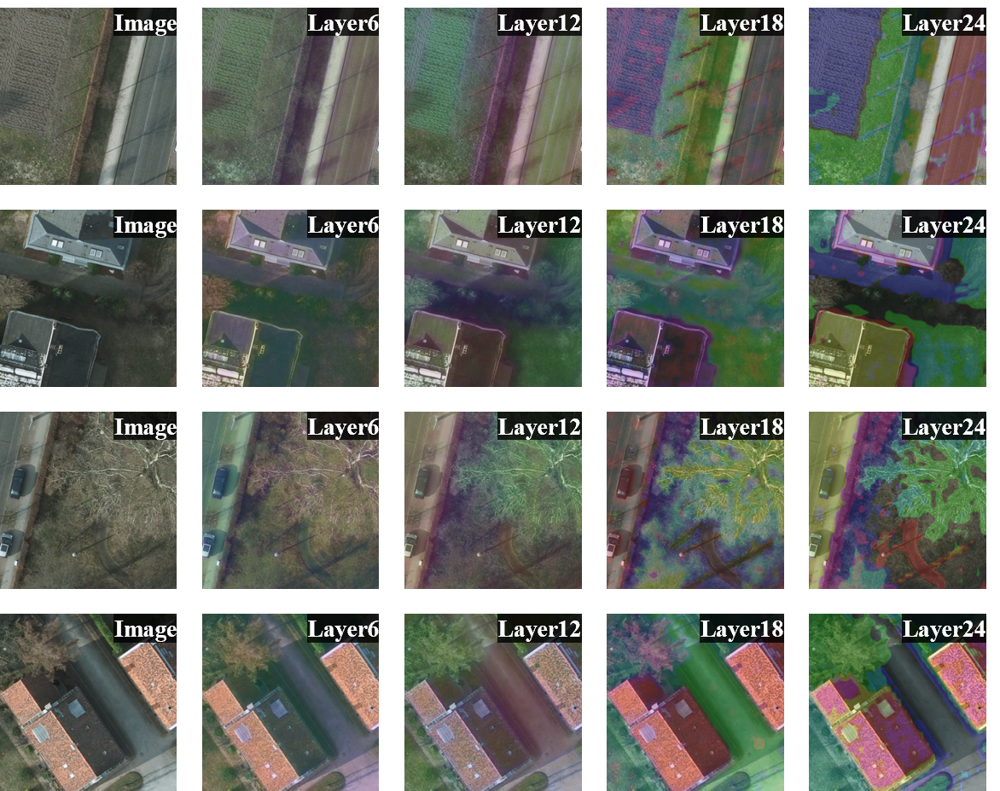

Abstract
Remote sensing semantic segmentation aims to assign pixel-level semantic labels to aerial or satellite images, but its practical deployment is often hindered by domain shifts caused by different sensors, imaging conditions, geographical regions, and spectral modalities. Recent Vision Foundation Models (VFMs) provide strong transferable representations for domain-generalizable segmentation, yet fully fine-tuning large VFMs is computationally expensive. Moreover, existing adaptation strategies do not fully exploit class-level language semantics jointly during backbone refinement and query initialization. In this paper, we propose VLBridge, a textual-guided tuning framework for domain generalizable remote sensing semantic segmentation. The core idea of VLBridge is to use category text embeddings as stable semantic anchors to bridge VFM feature adaptation and mask prediction. Specifically, VLBridge introduces language-guided bridge tuning into the frozen VFM backbone, where learnable bridge tokens are conditioned on class text embeddings and interact with intermediate visual tokens to refine features. Moreover, VLBridge constructs text-aware semantic queries for the mask decoding by expanding class text embeddings into multiple query slots, enabling category-aware mask prediction. By injecting textual semantics into both feature extraction and query initialization, VLBridge provides an efficient and semantically grounded way to adapt strong VFMs to remote sensing segmentation under domain shifts. Extensive experiments validate the effectiveness of the proposed framework.
Experiment Results && Visualization

Performance comparison on Potsdam → Vaihingen and Vaihingen → Potsdam benchmarks.

Performance comparison on Rural → Urban and Urban → Rural benchmarks.

Visualization of results on Potsdam → Vaihingen and Vaihingen → Potsdam.

Visualization of results on Rural → Urban and Urban → Rural.

PCA visualization of feature representations from different layers (Layer 6, 12, 18, and 24) of MsRE on the Potsdam → Vaihingen task.
BibTeX